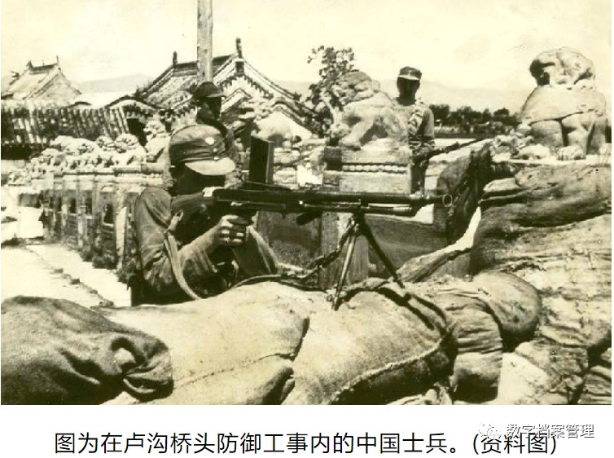
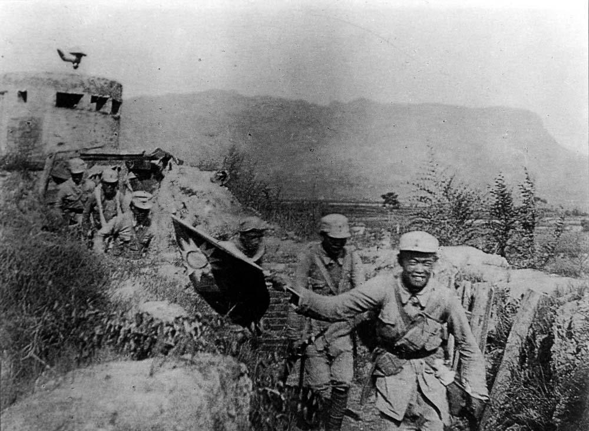
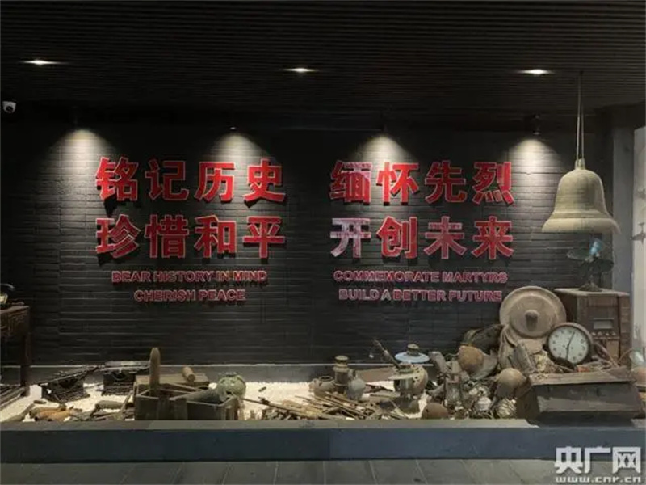

抗日战争重大历史事件回顾
铭记历史，缅怀先烈，吾辈自强。
卢沟桥事变（七七事变）
1937年7月7日夜，日本侵略军以士兵“失踪”为借口要求进入宛平县城搜查，遭中国守军拒绝后发动进攻。这是日本全面侵华战争的开端，史称“卢沟桥事变”。
卢沟桥事变标志着中华民族全面抗战的开始，唤醒了亿万国人从局部抵抗走向全民抗战的伟大转折。此战之后，全国人民团结一心，中华民族进入了浴血奋战的伟大时代。
铭记卢沟桥，不忘烽火年。中华民族自此挺立于世界民族之林。
铭记历史，发表感言

百团大战（1940年）
百团大战是中国共产党领导的八路军在华北地区对日军发动的一次大规模进攻战役，持续近4个月，共出动兵力10万余人，歼敌2万余人，炸毁铁路4700多公里。
这场战役极大地打击了日军的“囚笼政策”，鼓舞了全国人民的抗战信心，展示了中国军民的坚强意志与卓越战斗力，成为抗战史上最壮烈的篇章之一。
英勇的八路军以血肉之躯击碎侵略者的铁蹄，书写了民族抗战的光辉篇章。
铭记历史，发表感言

杭州笕桥空战与中央航校抗战英雄
杭州笕桥中央航空学校是中国空军的摇篮。1937年至1945年间，无数青年飞行员在此训练并浴血奋战，为保卫祖国领空献出青春与生命。
“笕桥精神”象征着中华民族的勇气与坚韧，激励着后人继承先烈遗志，为国家繁荣富强而奋斗。笕桥英烈们的无畏牺牲，成为中国航空史上最闪耀的篇章。
“保家卫国、誓死如归”——这是笕桥飞行员的誓言，也是中国抗战精神的缩影。
铭记历史，发表感言
